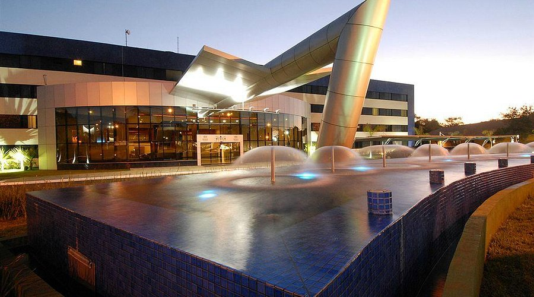

Hotel Viale Cataratas

★★★★
Informações Gerais
📍Av. das Cataratas, 2420 - Vila Yolanda, Foz do Iguaçu - PR
📞Telefone: (45) 2105-7200
🕒Horário de funcionamento: O Viale Cataratas Hotel & Eventos, localizado em Foz do Iguaçu, não possui horários de funcionamento específicos, pois é um hotel que oferece serviços de hospedagem e eventos. Os serviços da agência de turismo do hotel, que oferece passeios e atrativos, funcionam das 8h às 17h de segunda a sábado e das 8h às 12h aos domingos. O bar da piscina, por outro lado, funciona todos os dias das 10h às 23h.